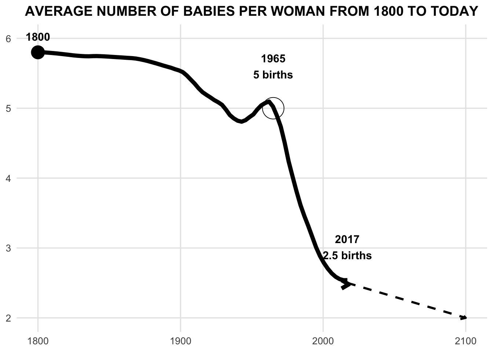

For this exercise, I am using a chart and dataset that I found while exploring Gapminder. The chart and dataset shows how the number of babies per women has dropped across the world over the years. The chart and dataset that I will be using can be found at this link.
RECREATING CHART
SCREENSHOT OF THE CHART BEING RECREATED:
STEPS TAKEN TO RECREATE THE CHART USING CHATGPT:
For the purpose of the exercise I used CHATGPT.
I first provided CHATGPT with the dataset and the screenshot of the chart. Then asked the following question:
“Using the dataset can you recreate the graph in the screeNshot using R code?
The following objects are masked from 'package:stats':
filter, lag
The following objects are masked from 'package:base':
intersect, setdiff, setequal, union
library(here)
here() starts at /Users/rinuthomas/Documents/PracticumII/rinuthomas_P2_portfolio
library(readr)# Define data location using here() packagedata_location = here::here("presentation-exercise","babies_per_women.csv")# Load Datadata =read_csv(data_location)
Rows: 301 Columns: 3
── Column specification ────────────────────────────────────────────────────────
Delimiter: ","
chr (1): name
dbl (2): time, Babies_per_woman
ℹ Use `spec()` to retrieve the full column specification for this data.
ℹ Specify the column types or set `show_col_types = FALSE` to quiet this message.
# Create the plotggplot(data, aes(x = time, y = Babies_per_woman)) +geom_line(size =2) +geom_point(data =filter(data, time ==1800), size =5) +geom_text(aes(x =1800, y =5.8, label ="1800"), vjust =-1) +geom_text(aes(x =1965, y =5, label ="1965\n5 births"), vjust =-1) +geom_text(aes(x =2017, y =2.5, label ="2017\n2.5 births"), vjust =-1) +annotate("segment", x =2017, xend =2060, y =2.5, yend =2.0, linetype ="dashed", arrow =arrow(length =unit(0.3, "cm"))) +labs(title ="AVERAGE NUMBER OF BABIES PER WOMAN FROM 1800 TO TODAY",x ="", y ="") +theme_minimal(base_size =15) +theme(axis.text =element_text(size =12),plot.title =element_text(hjust =0.5, face ="bold"))
Warning: Using `size` aesthetic for lines was deprecated in ggplot2 3.4.0.
ℹ Please use `linewidth` instead.
Warning in geom_text(aes(x = 1800, y = 5.8, label = "1800"), vjust = -1): All aesthetics have length 1, but the data has 301 rows.
ℹ Please consider using `annotate()` or provide this layer with data containing
a single row.
Warning in geom_text(aes(x = 1965, y = 5, label = "1965\n5 births"), vjust = -1): All aesthetics have length 1, but the data has 301 rows.
ℹ Please consider using `annotate()` or provide this layer with data containing
a single row.
Warning in geom_text(aes(x = 2017, y = 2.5, label = "2017\n2.5 births"), : All aesthetics have length 1, but the data has 301 rows.
ℹ Please consider using `annotate()` or provide this layer with data containing
a single row.
# Save the plotggsave("average_number_of_babies_per_woman.png", width =10, height =6)
Warning in geom_text(aes(x = 1800, y = 5.8, label = "1800"), vjust = -1): All aesthetics have length 1, but the data has 301 rows.
ℹ Please consider using `annotate()` or provide this layer with data containing
a single row.
Warning in geom_text(aes(x = 1965, y = 5, label = "1965\n5 births"), vjust = -1): All aesthetics have length 1, but the data has 301 rows.
ℹ Please consider using `annotate()` or provide this layer with data containing
a single row.
Warning in geom_text(aes(x = 2017, y = 2.5, label = "2017\n2.5 births"), : All aesthetics have length 1, but the data has 301 rows.
ℹ Please consider using `annotate()` or provide this layer with data containing
a single row.
The initial code provided by CHATGPT required a few fixes to make the chart look same as the original chart. The fixes included:
Fixing the tail end to have dotted line.
Adding a circle at the point where it says “1965 5 Births”.
Adjusting the size of the chart to make it more visible.
PROMPTS TO FIX:
I used multiple prompts to fix and to produce the final chart.
The prompts included:
“Can you remove the solid line at the tail end and make it a dashed line to make it look similar to the screenshot provided?”
“Add a circle at point where it says”1965 5 births”
“Can you adjust the size of the chart to make more the contents more visible?”
Finally, to fix few alignment issues I made some changes to the final code.
FINAL CODE FROM CHATGPT AND FINAL CHART
# Load necessary librarieslibrary(ggplot2)library(dplyr)library(here)library(readr)# Define data location using here() packagedata_location = here::here("presentation-exercise","babies_per_women.csv")# Load Datadata =read_csv(data_location)
Rows: 301 Columns: 3
── Column specification ────────────────────────────────────────────────────────
Delimiter: ","
chr (1): name
dbl (2): time, Babies_per_woman
ℹ Use `spec()` to retrieve the full column specification for this data.
ℹ Specify the column types or set `show_col_types = FALSE` to quiet this message.
# Separate the actual and projected dataactual_data <-filter(data, time <=2017)projection <-data.frame(time =c(2017, 2100), `Babies_per_woman`=c(2.5, 2.0))# Create the plotggplot() +geom_smooth(data = actual_data, aes(x = time, y =`Babies_per_woman`), method ="loess", span =0.2, size =2, color ="black", se =FALSE) +geom_line(data = projection, aes(x = time, y =`Babies_per_woman`), linetype ="dashed", size =1, color ="black") +geom_point(data =filter(data, time ==1800), aes(x = time, y =`Babies_per_woman`), size =6, color ="black") +geom_text(data =filter(data, time ==1800), aes(x = time, y =`Babies_per_woman`, label ="1800"), vjust =-1.5, size =4, fontface ="bold") +geom_text(aes(x =1965, y =5, label ="1965\n5 births"), vjust =-1.25, size =4, fontface ="bold") +geom_text(aes(x =2017, y =2.5, label ="2017\n2.5 births"), vjust =-1, size =4, fontface ="bold") +annotate("segment", x =2017, xend =2100, y =2.5, yend =2.0, linetype ="dashed", size =1, color ="black", arrow =arrow(length =unit(0.2, "cm"))) +annotate("point", x =1965, y =5, color ="black", size =10, shape =21, fill =NA) +annotate("segment", x =max(actual_data$time), xend =max(actual_data$time) +1, y =tail(actual_data$`Babies_per_woman`, 1), yend =tail(actual_data$`Babies per woman`, 1), color ="black", size =2, arrow =arrow(length =unit(0.3, "cm"))) +scale_y_continuous(limits =c(2, 6), breaks =seq(2, 6, by =1)) +labs(title ="AVERAGE NUMBER OF BABIES PER WOMAN FROM 1800 TO TODAY",x =NULL, y =NULL) +theme_minimal(base_size =12) +theme(plot.title =element_text(size =14, face ="bold", hjust =0.5),axis.text =element_text(size =10),axis.title.x =element_blank(),axis.title.y =element_blank(),panel.grid.major =element_line(color ="grey90"),panel.grid.minor =element_blank())
Warning: Unknown or uninitialised column: `Babies per woman`.
`geom_smooth()` using formula = 'y ~ x'

# Save the plot with reduced sizeggsave("average_number_of_babies_per_woman_final.png", width =8, height =5)
`geom_smooth()` using formula = 'y ~ x'
CREATING PUBLICATION QUALITY TABLE
I provide CHATGPT with the following prompts to create the table:
“Utilizing the dataset provided create a professional looking table using R code”
“Only include columns Year and Babies per women”
“Make the table to display averages of every 10 years”
The following object is masked from 'package:dplyr':
group_rows
# Define data location using here() packagedata_location = here::here("presentation-exercise","babies_per_women.csv")# Load Datadata =read_csv(data_location)
Rows: 301 Columns: 3
── Column specification ────────────────────────────────────────────────────────
Delimiter: ","
chr (1): name
dbl (2): time, Babies_per_woman
ℹ Use `spec()` to retrieve the full column specification for this data.
ℹ Specify the column types or set `show_col_types = FALSE` to quiet this message.
# Group by decade and calculate the average number of babies per womandata_decade <- data %>%mutate(Decade = (time %/%10) *10) %>%group_by(Decade) %>%summarise(`Average Babies per Woman`=mean(`Babies_per_woman`, na.rm =TRUE)) %>%ungroup()# Create a professional-looking table with a centered, bold headingdata_decade %>%kable("html", col.names =c("Decade", "Average Babies per Woman"), align ='c') %>%kable_styling(bootstrap_options =c("striped", "hover", "condensed", "responsive", "bordered"), full_width = F) %>%column_spec(1, bold = T, color ="white", background ="dodgerblue") %>%column_spec(2, bold = T) %>%row_spec(0, bold = T, background ="darkblue", color ="white") %>%add_header_above(c("Average Number of Babies per Woman by Decade"=2), bold =TRUE, align ="c", color ="black", background ="lightgray")